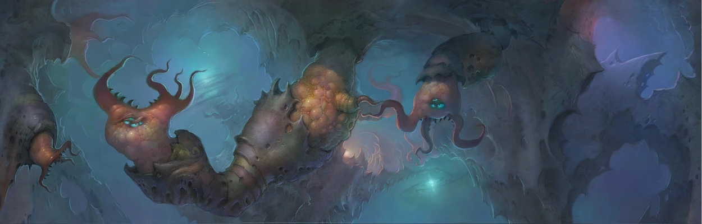

Released on October 11, 2004. Tak is back, wielding new Juju powers, and this time he must enter the world of dreams to rescue a mysterious princess from the Dream Guardian in this linear action platformer.
Overview
Gameplay
Tak 2 takes a more linear approach to platforming than the first. Players go through the game
level-by-level, with a much larger focus on fighting (using the new combat system and juju spells)
than exploration. This game takes the animal-based puzzles from the first game to the next level
by introducing the ability for Tak himself to turn into animals, using the abilities of his new
forms to his advantage. This game also features a multiplayer minigame mode known as the "Dinky Games".
Story
After falling into a deep slumber, unable to wake, Tak meets a strange being in his dreams who
claims to be the Dream Juju and tells him that he must save a beautiful princess from
a fearsome beast known as the Dream Guardian. Tak finally wakes up and embarks on his
quest, traveling through both the waking world and the world of dreams to save the princess and
find out who this "Dream Juju" really is.
Art/Presentation
Tak 2: The Staff of Dreams features a very similar caroony/painterly artstyle to the first game,
but this time with a much greater focus on strange, psychedelic, amorphous landscapes, depicting
the dream world Tak finds himself in this time.

The wonderful Jason Marsden, Patrick Warburton, and Rob Paulsen reprise their roles as Tak, Lok, and
Tlaloc/Dead Juju respectively. This time, due to the linear nature of the game, there is a much
larger focus on the story and comedic writing.
The music in Tak 2 uses a lot of the same blend of tribal and rock as the first game, but now with
an emphasis on strings, adding an epic, symphonic feel to the soundtrack.
My Opinions
I would classify Tak 2: The Staff of Dreams as the weakest entry in the trilogy. It doesn't quite
have the exploration of the first game or the phenomenal writing and unique co-op action of the third.
Despite this, it is still an absolutely fantastic game. The unique environments are
still a blast to traverse, the music still blows your socks off, the writing is still hilarious and
now containing way less toilet humor, and the combat is actually a substantial improvement over the
first game's.